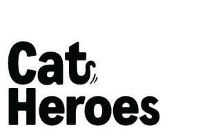

Trade Mark Journal No.2026/011 13 March 2026
UK00004346651 27 February 2026 (5,31,44)

- Class 5
- Dietary supplements for animals; Dietary supplements for humans and animals; Medicated additives for animal feed; Medicated dietary supplements; Mineral dietary supplements; Nutritional mineral supplements; Food additives for animal feed, for medical use; Protein supplements for animals.
- Class 31
- Foodstuffs and fodder for animals; Active dried yeast for animals; Algarovilla for animal consumption; Animal fattening preparations; Animal feed preparations; Animal foodstuffs; Animal foodstuffs consisting of soya bean products; Animal foodstuffs containing air-cured hay; Animal foodstuffs containing hay; Animal foodstuffs derived from air-cured hay; Animal foodstuffs derived from hay; Animal foodstuffs derived from vegetable matter; Animal foodstuffs for the weaning of animals; Animal foodstuffs in the form of nuts; Animal foodstuffs in the form of pellets; Animal foodstuffs in the form of pieces; Artificial milk prepared for use as a feeding stuff for calves; Bait, not artificial; Baled air-cured hay; Beverages for canines; Beverages for cats; Beverages for pets; Bird food; Bird seed; Biscuits for animals; Biscuits for puppies; Biscuits made from cereals for animals; Biscuits made from malt for animals; Bran mash for animal consumption; Brine shrimp for fish food; By-products of the processing of cereals, for animal consumption; Canned foodstuffs consisting of meat for young animals; Canned foodstuffs for cats; Canned or preserved foods for animals; Cat biscuits; Cat treats [edible]; Cereal based foodstuffs for animals; Cereal cakes for animals; Cereals preparations being food for animals; Cereals products for consumption by animals; Cuttle bone [for cage birds]; Cuttle bone for birds; Cuttlefish bones; Distillery waste for animal consumption; Digestible chewing bones and bars for domestic animals; Feeding preparations for bees; Feeding substances for bees; Fish meal for animal consumption; Flax meal [fodder]; Fodder; Food for aquarium fish; Food for goldfish; Food for rodents; Food for wild birds; Food preparations for cats; Foods containing beef for feeding cats; Foods containing chicken for feeding cats; Foods containing liver for feeding cats; Foods flavoured with beef for feeding cats; Foods flavoured with chicken for feeding cats; Foods flavoured with liver for feeding cats; Foods in the form of rings for feeding to cats; Foodstuffs containing phosphate for feeding animals; Foodstuffs for animals containing botanical extracts; Foodstuffs for animals on a milk basis; Foodstuffs for calves; Foodstuffs for cats; Foodstuffs for cats based on or consisting of fish; Foodstuffs for chickens; Foodstuffs for dairy animals; Foodstuffs for farm animals; Foodstuffs for fish; Foodstuffs for horses; Foodstuffs for marine animals; Foodstuffs for pigs; Foodstuffs for poultry; Foodstuffs for puppies; Foodstuffs for sheep; Formula animal feed; Fortified food substances for animals; Grains for animal consumption; Groats for poultry; Ground bait [live or natural]; Hamster food; Hay; Lime for animal forage; Linseed for animal consumption; Linseed meal for animal consumption; Maize (Processed -) for consumption by animals; Maize cake for cattle; Maize for consumption by animals; Malt albumin for animal consumption [other than for medical use]; Malt extracts for consumption by animals; Malt for animals; Mash for fattening livestock; Meal for animals; Meal for consumption by animals; Milk for use as foodstuffs for animals; Milk substitutes for use as foodstuffs for animals; Milk-based foodstuffs for animals; Milled food products for animals; Mineral salts for cattle; Mixed animal feed; Natural rice for use as animal fodder; Nutrients [foodstuffs] for fish; Oat biscuits for consumption by animals; Oat cakes for consumption by animals; Oat-based food for animals; Oatmeal for consumption by animals; Oats for consumption by animals; Oil cake; Oilseed meal for animals; Peanut cake for animals; Peanut meal for animals; Pet food; Pet foods in the form of chews; Pet treats in the nature of bully sticks; Poultry grit; Powdered milk for kittens; Powdered milk for puppies; Preparations for egg laying poultry; Preserved crops for animal feeds; Processed cereals for consumption by animals; Processed oats for consumption by animals; Pulses [foodstuffs for animals]; Rabbit food; Rape cake for cattle; Rapeseed meal for animal consumption; Residues from malt treatment for use as an animal feed; Rice bran [animal feed]; Rice meal for forage; Salt for cattle; Salt licks; Savory biscuits for animals; Soy bean meal [animal feed]; Soy sauce cakes [animal feed]; Stall food for animals; Starch pulp [animal feed]; Straw; Straw [forage]; Strengthening animal forage; Sweet biscuits for consumption by animals; Synthetic animal feed; Wheat germ for animal consumption; Wheat proteins for animal food; Wildlife seed mixtures; Yeast extracts for consumption by animals; Yeast for animal consumption; Yeast for animal fodder; Yeast tablets for consumption by animals.
- Class 44
- Pet grooming; Animal healthcare services; Animal grooming services; Grooming salon services for pet animals; Dog-clipping; Dog grooming services; Animal clipping; Animal beautician services for dogs; Animal beautician services for cats; Animal beautician services; Advisory services relating to the care of pet animals; Advisory services relating to the care of animals; Hygienic and beauty care for animals; Pet bathing services; Pet beauty salon services; Services for the care of pet animals.
PETCO SRL
Representative: Gill Jennings & Every LLP